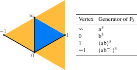
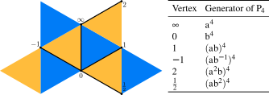
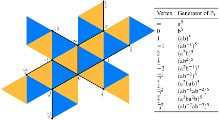
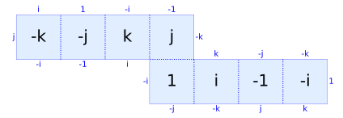

Workshop on Dynamics and Moduli Spaces of Translation Surfaces
October 22 - 26, 2018, The Fields Institute
Infinite nilpotent covers of square-tiled surfaces
Pat Hooper (City College of New York & CUNY Graduate Center)
joint with
Khalid Bou-Rabee (City College of New York & CUNY Graduate Center)
The Extrinsic Primitive Torsion Problem arXiv:1708.02093
Outline of talk
- Definitions, basic examples, motivating results
- Symmetric square tiled surfaces through cylinders
Definitions
- Let $G$ be a discrete group and $S$ be a surface. A $G$-cover of $S$ is a regular cover $\tilde S \to S$ with Deck group isomorphic to $G$.
- Let $\mu$ be a measure on a $G$-cover $\tilde S$, and $\alpha:G \to \R_{>0}$ be a group homomorphism. Then $\mu$ is Maharam if $$\mu \circ g = \alpha(g) \mu \quad \text{for all $g \in G$.}$$
Theorem (Babillot, Ledrappier–Sarig)
Let $\tilde S$ is a nilpotent-cover of a compact hyperbolic surface and $h^t:T_1 \tilde S \to T_1 \tilde S$ be
the horocycle flow. Then the the ergodic horocycle-flow invariant Radon measures are the Maharam measures which are in bijective
correspondence with $Hom(G,\R_{>0}) = \{\alpha:G \to \R_{>0}\}$.
- A square-tiled surface is a cover of ${\mathbb T}^\ast=\T^2 \smallsetminus \{0\}$.
- The straight-line flow in direction $\theta$ is $$F_\theta^t:S \to S; ~ z \mapsto z + e^{i \theta} \text{ in local coordinates}.$$
Theorem (H) Let $\tilde S$ be a nilpotent-cover of a compact translation surface $S$ which is possibly branched. Assume there are horizontal and vertical affine multitwists $\phi,\psi:\tilde S \to \tilde S$ in horizontal and vertical cylinder decompositions and that each cylinder intersects at least two others. Let $$\Gamma = \langle D(\phi), D(\psi) \rangle = \left\langle \left(\begin{array}{r} 1 & a \\ 0 & 1 \end{array}\right), \left(\begin{array}{r} 1 & 0 \\ b & 1 \end{array}\right)\right\rangle.$$ Then for all but countably many $\theta$ in the limit set of $\Gamma$, the flow $F_\theta$ is ergodic. Moreover, the locally-finite ergodic invariant Borel measures are the $\alpha$-Maharam measures and there is one for each $\alpha:G \to \R_{>0}.$
Symmetric square tiled surfaces through cylinders
Def. Let $S$ be a square-tiled surface with covering map $\pi:S \to \T^\ast$. Let $k \geq 2$.} We say $S$ is $k$-periodic if for every non-singular geodesic $\tilde \gamma$ of rational slope in $S$, the restriction of $\pi$ to $\tilde \gamma \to \pi(\tilde \gamma)$ is a finite cover of degree dividing $k$.
Prop. For each integer $k \geq 2$, there is a universal $k$-periodic square-tiled surface $U_k$. That is, $U_k$ is a $k$-periodic square tiled surface and if $S$ is another one, there is a covering $U_k \to S$.
Normal generators for $P_2$.

Normal generators for $P_3$.
 $$G_3=F_2/P_3=F_2 / \langle a^3, b^3, (ab)^3, (ab^{-1})^3\rangle.$$Normal generators for $P_4$.
Normal generators for $P_5$.
Normal generators for $P_6$...
Open Question: Are the groups $P_k$ for $k \geq 6$ finitely normally generated? Is our countable list of generators minimal?
Theorem 1 (H – Bou-Rabee).
The surface $U_k$ is infinite (equivalently, $F_2/P_k$ is infinite) if and only if $k \geq 4$.
Theorem 2 (H – Bou-Rabee).
The group $G_4 = F_2/P_4$ is virtually a torsion-free nilpotent group of dimension $5$ and nilpotence class $2$.
There is a faithful representation $\tilde{\tilde{\rho}}:F_2/P_4 \to SL(9,\C)$ determined by
$$\tilde{\tilde{\rho}}(a)=\textit{diag}(1, -1, -i, -i; -1, 1, i, i; 1),$$
$$\tilde{\tilde{\rho}}_4(b)=\left(\begin{array}{rrrr|rrrr|r}
0 & 0 & 0 & 0 & 0 & 1 & 1 & 0 & 0 \\
0 & 0 & 0 & 0 & -1 & 0 & 0 & 1 & 0 \\
0 & 0 & 0 & 0 & 0 & 0 & 1 & 0 & 1 \\
0 & 0 & 0 & 0 & 0 & 0 & 0 & 1 & 0 \\
\hline
0 & -1 & -1 & 0 & 0 & 0 & 0 & 0 & 0 \\
1 & 0 & 0 & -1 & 0 & 0 & 0 & 0 & 0 \\
0 & 0 & -1 & 0 & 0 & 0 & 0 & 0 & 0 \\
0 & 0 & 0 & -1 & 0 & 0 & 0 & 0 & -1 \\
\hline
0 & 0 & 0 & 0 & 0 & 0 & 0 & 0 & 1
\end{array}\right).$$
 Cor. $U_4$ is a torsion-free class $2$ nilpotent cover of the eierlegende Wollmilchsau, the
8-square surface built associated to the quaterion group.
Cor. $U_4$ is a torsion-free class $2$ nilpotent cover of the eierlegende Wollmilchsau, the
8-square surface built associated to the quaterion group.

This surface was found independently by Forni and by Herrlich – Möller – Weitze-Schmithüsen.
The surface $U_4$ is a $\Z$-cover of a $\Z^4$-cover of the Wollmilchsau. The deck group $G_4=F_2/P_4$ is a $\Z$-extension of a $\Z^4$-extension of the quaternion group.
Theorem (Frączek – Schmoll)
Straight-line flow is ergodic in a.e. direction on $U_4/\Z$.
There is a decomposition $\Aut(F_2)=\Aut_+(F_2) \cup \Aut_-(F_2)$, where signs are assigned to an automorphism depending on the determinant of the image in $\GL(2,\Z)=Out(F_2)$.
- For every $\psi \in \Aut_+(F_2)$ there is an $M \in GL(m,\C)$ so that $$M \cdot \rho \circ \psi^{-1}(g) \cdot M^{-1} = \rho(g) \quad \text{for all $g \in F_2$.}$$
- For every $\psi \in \Aut_-(F_2)$ there is an $M \in GL(m,\C)$ so that $$ M \cdot \overline{\rho \circ \psi^{-1}(g)} \cdot M^{-1} = \rho(g) \quad \text{for all $g \in F_2$.}$$